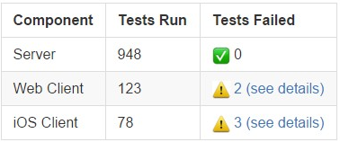

Incoming Webhooks¶
Incoming webhooks allow external applications, written in the programming language of your choice–to post messages into Mattermost channels, private groups and direct messages by sending a specifically formatted JSON payload via HTTP POST request to a secret Mattermost URL generated specifically for each application.
A couple key points:
- Mattermost incoming webhooks are Slack-compatible. If you’ve used Slack’s incoming webhooks to create integrations, you can copy and paste that code to create Mattermost integrations. Mattermost automatically translates Slack’s proprietary JSON payload format into markdown to render in Mattermost messages
- Mattermost incoming webhooks support full markdown. A rich range of formatting unavailable in Slack is made possible through markdown support in Mattermost, including headings, formatted fonts, tables, inline images and other options supported by [Mattermost Markdown]
Example:
Suppose you wanted to create a notification of the status of a daily build, with a table of total tests run and total tests failed by component category, with links to failed tests by category. You could create the following JSON payload to post to a Mattermost channel using webhooks:
payload={"text": "
---
Build Break - Project X - December 12, 2015 - 15:32 GMT +0
| Component | Tests Run | Tests Failed |
|:-----------|:------------|:-----------------------------------------------|
| Server | 948 | :white_check_mark: 0 |
| Web Client | 123 | :warning: [2 (see details)](http://linktologs) |
| iOS Client | 78 | :warning: [3 (see details)](http://linktologs) |
---
"}
Which would render in a Mattermost message as follows:
Build Break - Project X - December 12, 2015 - 15:32 GMT +0

Enabling Incoming Webhooks¶
Incoming webhooks should be enabled on your Mattermost instance by default, but if they are not you’ll need to get your system administrator to enable them. If you are the system administrator you can enable them by doing the following:
- Login to your Mattermost team account that has the system administrator role
- Enable incoming webhooks from System Console > Integrations > Webhooks and Commands
- (Optional) Configure the Enable Overriding of Usernames from Webhooks option to allow external applications to post messages under any name. If not enabled, the username of the creator of the webhook URL is used to post messages
- (Optional) Configure the Enable Overriding of Icon from Webhooks option to allow external applications to change the icon of the account posting messages. If not enabled, the icon of the creator of the webhook URL is used to post messages
Setting Up Existing Integrations¶
If you’ve already found or built an integration and are just looking to hook it up, then you should just need to follow the specific instructions of that integration. If the integration is using Mattermost incoming webhooks, then at some point in the instructions it will ask for a webhook URL. You can get this URL by following the first step in the next section Creating Integrations using Incoming Webhooks.
Creating Integrations using Incoming Webhooks¶
You can create a webhook integration to post into any Mattermost public channels and into private groups you have permission to by using these steps:
Note: Incoming webhooks must be enabled. Only your Mattermost system administrator can enable incoming webhooks if they are currently disabled.
- Create a Mattermost Incoming Webhook URL
- Login to your Mattermost team site and go to Main Menu > Integrations > Incoming Webhooks
- Click Add incoming webhook
- Select the channel or private group to receive webhook payloads, then click Add to create the webhook
- To see your new webhook in action, try a curl command from your terminal or command-line to send a JSON string as the
payloadparameter in a HTTP POST request- Example:
curl -i -X POST -d 'payload={"text": "Hello, this is some text.\nThis is more text."}' http://yourmattermost.com/hooks/xxx-generatedkey-xxx
- Build your integration in the programming language of your choice
- Most integrations will be used to translate some sort of output from another system to an appropriately formatted input that will be passed into the Mattermost webhook URL. For example, an integration could take events generated by GitLab outgoing webhooks and parse them into a JSON body to post into Mattermost
- To get the message posted into Mattermost, your integration will need to create an HTTP POST request that will submit to the incoming webhook URL you created before. The body of the request must have a
payloadthat contains a JSON object that specifies atextparameter. For example,payload={"text": "Hello, this is some text."}is a valid body for a request - Set up your integration running on Heroku, an AWS server or a server of your own to start sending real time updates to Mattermost channels and private groups
Additional Notes:
- For the HTTP request body, if
Content-Typeis specified asapplication/jsonin the headers of the HTTP request then the body of the request can be direct JSON. For example,{"text": "Hello, this is some text."} - You can override the channel specified in the webhook definition by specifying a
channelparameter in your payload. For example, you might have a single webhook created for Town Square, but you can usepayload={"channel": "off-topic", "text": "Hello, this is some text."}to send a message to the Off-Topic channel using the same webhook URL. If an@symbol followed by a username is specified, then the message will be sent to that user’s direct message channel - In addition, with Enable Overriding of Usernames from Webhooks turned on, you can also override the username the message posts as by providing a
usernameparameter in your JSON payload. For example, you might want your message looking like it came from a robot so you can usepayload={"username": "robot", "text": "Hello, this is some text."}to change the username of the post to robot. Note, to combat any malicious users from trying to use this to perform phishing attacks aBOTindicator appears next to posts coming from webhooks - With Enable Overriding of Icon from Webhooks turned on, you can similarly change the icon the message posts with by providing a link to an image in the
icon_urlparameter of your payload. For example,payload={"icon_url": "http://somewebsite.com/somecoolimage.jpg", "text": "Hello, this is some text."}will post using whatever image is located athttp://somewebsite.com/somecoolimage.jpgas the icon for the post - Also, as mentioned previously, markdown can be used to create richly formatted payloads, for example:
payload={"text": "# A Header\nThe _text_ below **the** header."}creates a messages with a header, a carriage return and bold text for “the” - Including
@usernamein the JSON payload will trigger a mention notification for the person with the specified username. Channels can be mentioned by including@channelor<!channel>. For example:payload={"text": "<!channel> this is a notification""}would create a message that mentions@channel - Just like regular posts, the text will be limited to 4000 characters at maximum
- Posts with advanced formatting can be created by including an attachment array in the JSON payload
Slack Compatibility¶
Mattermost makes it easy to take integrations written for Slack’s proprietary JSON payload format and repurpose them to become Mattermost integrations. For example:
Connecting Mattermost to GitLab using Slack UI¶
GitLab is the leading open-source alternative to GitHub and offers built-in integrations with Slack. Rather than having to change code to support Mattermost, users can add Mattermost webhooks directly into the interface for Slack.
- In GitLab, go to Settings > Services and select Slack.
- Paste in the incoming webhook URL provided by Mattermost from under Main Menu > Integration > Incoming Webhooks.
- Optionally set the Username you’d like displayed when the notification is made. Leave the Channel field blank
- Click Save then test the settings to confirm posts will be made to Mattermost
Translating Slack’s proprietary data format to Mattermost¶
The following describes the automatic translations Mattermost performance to process data coming from Slack:
- Payloads designed for Slack using
<>to note the need to hyperlink a URL, such aspayload={"text": "<http://www.mattermost.com/>"}, are translated to the equivalent markdown in Mattermost and rendered the same as you would see in Slack - Similiarly, payloads designed for Slack using
|within a<>to define linked text, such aspayload={"text": "Click <http://www.mattermost.com/|here> for a link."}, are also translated to the equivalent markdown in Mattermost and rendered the same as you would see in Slack - Like Slack, by overriding the channel name with a
@username, such aspayload={"text": "Hi", channel: "@jim"}, you can send the message to a user through your direct message chat - Channel names can be prepended with a
#, like they are in Slack incoming webhooks, and the message will still be sent to the correct channel
To see samples and community contributions, please visit http://mattermost.org/webhooks.
Known Slack Compatibility Issues¶
- Using icon_emoji to override the username is not supported
- Referencing channels using <#CHANNEL_ID> does not link to the channel
<!here>,<!everyone>, and<!group>are not supported- Parameters “mrkdwn”, “parse”, and “link_names” are not supported (Mattermost always converts markdown and automatically links @mentions)
- Bold formatting as
*bold*is not supported (must be done as**bold**) - Webhooks cannot direct message the user who created the webhook